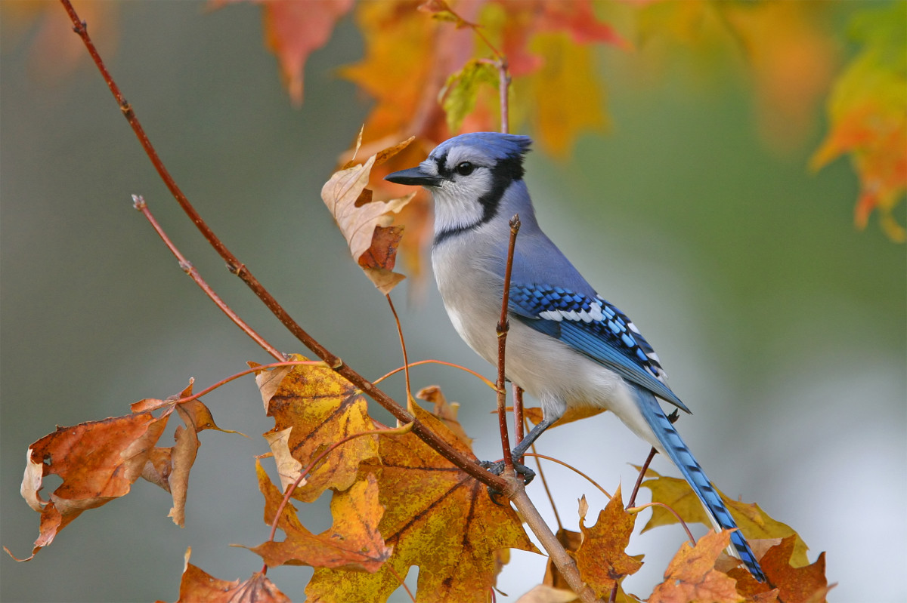

Autumn, also known as fall, is one of the four temperate seasons, following summer and preceding winter. It is characterized by the transition from warm to cooler temperatures, the shedding of leaves by deciduous trees, and the harvest of crops.

Key Characteristics:
Temperature Transition: Autumn marks the transition from the warm temperatures of summer to the cooler temperatures of winter. Days gradually become shorter, and temperatures begin to decline, leading to crisp mornings and mild afternoons.
Fall Foliage: One of the most iconic features of autumn is the changing colors of leaves on deciduous trees. As temperatures drop and daylight hours decrease, chlorophyll production ceases, revealing the vibrant hues of red, orange, and yellow in the foliage.
Harvest Season: Autumn is associated with the harvest of crops such as corn, pumpkins, apples, grapes, and various vegetables. It's a time of plenty, as farmers gather their crops and prepare for the winter months ahead.
Seasonal Foods: Autumn brings a bounty of seasonal foods, including apples, pumpkins, squash, sweet potatoes, and hearty soups and stews. These foods are enjoyed in a variety of dishes, from pies and desserts to savory meals.
Cultural Celebrations: Many cultures and religions celebrate festivals and holidays during the autumn season, often associated with harvest themes, gratitude, and remembrance. Examples include Thanksgiving, Halloween, and various harvest festivals around the world.
Migration and Hibernation: Autumn is a time of transition for many animals, with migratory birds flying south for the winter and animals preparing for hibernation. It's a critical period for wildlife as they adapt to changing environmental conditions.
Outdoor Activities: Autumn is a popular time for outdoor activities such as hiking, leaf-peeping, apple picking, and nature walks. The cooler temperatures and colorful scenery make it an ideal season for enjoying the outdoors.
Overall, autumn is a season of transition, abundance, and natural beauty, with its colorful foliage, harvest traditions, and opportunities for outdoor enjoyment. It's a time to celebrate the changing seasons and embrace the comforts of fall living.